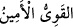

kendisiyle evlendiği Şuayb (a.s.)’ın büyük kızıdır. O şöyle dedi: “Ey babacığım,
Mûsâ’yı çoban tut; koyunların yayım ve bakım işlerini yapsın. Çünkü ücretle tuttuğun
kimselerin en hayırlı olanı; güçlü ve emin olanıdır.”
“
” kelimelerindeki elif-lam; cins içindir; ahd için değildir ve bunun
şümûlüne Mûsâ (a.s.) da dâhildir. “
” kelimesi güçlü ve kuvvetli; “
” kelimesi
ise emin ve güvenilir anlamına gelir ve Mûsâ (a.s.)’nın güçlü, kuvvetli ve emin bir
kimse olduğuna işâret eder.
Rivâyete göre, Şuayb (a.s.) kızına: “O’nun güçlü ve güvenilir olduğunu nerden
anladın?” dedi. O da Mûsâ’nın kuyunun başından taşı kaldırışını, büyük kovayı çekişini,
onu çağırırken verâ’ından dolayı başını önüne eğerek yüzüne bakmadığını ve mektubu
böylece ulaştırdığını, yolda yürürlerken kendisine arkadan gelmesini emrettiğini anlattı
ve dolayısıyla bu iki hasleti onda gördüğünü ifâde etti. Çünkü o bu anda bu iki meziyete
sâhip ahlaklı birine muhtaçtı. Kuvvetli oluşuna gelince, bu, sulama işini yapmak içindi.
Emânet ehli olmasına gelince, bu, gözü muhâfaza ve nefsi (karşı cinsinden) korumak
içindi. Nitekim Yusuf (a.s.) da şöyle demişti: “Çünkü ben (onları) çok iyi korurum ve
bu işi bilirim” (Yûsuf, 12/55). Çünkü Yusuf (a.s.)’ın o anda koruma (hıfza) ve (işleri)
bilmeye (ilme) ihtiyacı vardı. Hıfz, kralın hazinesini korumak; ilim de giren çıkanı
kontrol etmek içindi.
Şüreyh, şu üç âyet dışında Kur’ân’dan bir şey tefsir etmezdi: Birincisi “
(nikah bağı elinde bulunanın…)” (el-Bakara, 2/237) âyetidir. O,
bunu “zevc (koca)” olarak tefsir ederdi. İkincisi, “
(O’na hikmet
ve güzel konuşma vermiştik” (es-Sa’d, 38/20) âyetidir. O, “
(hikmet)” kelimesini
fıkıh ve ilim; “
(açık konuşma)” ifâdesini de delil (beyyine) ve yemin olarak
tefsir ederdi. Üçüncüsü ise “Çünkü ücretle istihdam edeceğin en iyi kimse, güçlü ve
güvenilir olandır” (el-Kasas, 28/26) âyetidir ki o da bu âyeti benim tefsir ettiğim gibi
“taşı kaldırmak ve gözü korumak” şeklinde açıklamıştır.
27. (Şuayb) dedi ki: Bana sekiz yıl çalışmana karşılık şu iki kızımdan birini sana
nikâhlamak istiyorum. Eğer on yıla tamamlarsan artık o kendinden; yoksa sana
ağırlık vermek istemem. İnşallah beni iyi kimselerden (işverenlerden) bulacaksın.
“(Şuayb)” (a.s.) Mûsâ (a.s.)’ın kuvvetli ve emânet ehli bir kimse olduğunu anladıktan
sonra “dedi ki: Bana sekiz yıl” müddetle “çalışmana karşılık şu iki kızımdan birini